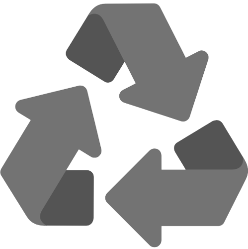

Welcome to My Webpage!This a webpage created by Ricketson Palacio to advocate for Recycling. Here in this website you can learn about the importance of Recycling and the proper guidelines for sorting and preparing recyclable materials such as plastic, glass, paper and metal and why we should recycle them! |
|  |
About RecyclingRecycling is the process of collecting and processing waste materials to create new products. The goal of recycling is to conserve natural resources, reduce waste in landfills, and minimize the environmental impact of manufacturing new products. Recycling can be done with a wide variety of materials, including paper, plastic, glass, metal, and electronics. Each type of material requires a specific recycling process, and some materials are easier to recycle than others. |
Proper Guidelines for Sorting and Preparing Recyclable MaterialsSorting and preparing recyclable materials is an important part of the recycling process. Proper sorting and preparation ensures that the materials can be recycled effectively, without contaminating other materials or damaging recycling equipment. Here are some guidelines for sorting and preparing recyclable materials:
By following these guidelines, individuals and communities can help ensure that recyclable materials are processed effectively and that the benefits of recycling are maximized. |
MaterialsPlasticOne of the main reasons to recycle plastic is to reduce the amount of plastic waste that ends up in landfills or in the environment. Plastic waste can take hundreds of years to decompose, and it can harm wildlife and pollute ecosystems. Recycling plastic also conserves resources by reducing the need to extract and process new plastic from fossil fuels. This, in turn, can help reduce carbon emissions and address climate change. GlassGlass is a highly recyclable material, and recycling glass can help conserve natural resources and reduce waste. Producing new glass from recycled glass also uses less energy than producing glass from raw materials. Additionally, recycling glass can help reduce the amount of greenhouse gas emissions associated with the production of new glass. This is because glass production is a highly energy-intensive process, and using recycled glass can help reduce the amount of energy needed to manufacture new glass products. PaperRecycling paper helps conserve trees and other natural resources. It also reduces the amount of paper waste that ends up in landfills, which can take up valuable space and emit greenhouse gases as the paper decomposes. Additionally, producing paper from recycled pulp requires less energy than producing paper from raw materials, which can also help reduce carbon emissions. MetalRecycling metal helps conserve natural resources and reduce waste. Metals are valuable materials that can be recycled over and over again without losing their properties. Recycling metal also uses less energy than producing new metal from raw materials. For example, recycling aluminum cans saves 95% of the energy required to produce new aluminum from bauxite ore. Additionally, recycling metal can help reduce the amount of greenhouse gas emissions associated with the production of new metal. |